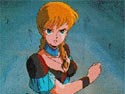
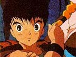
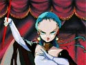
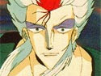

|
D is a Dhampire, which means he is the offspring of a human and a Vampire. D's father was noneother than the infamous Count Dracula. D is a Vampire Hunter who does not ask for payment for his actions, only to fight evil. He dresses in all black, wearing a wide brimmed hat and a long flowing cape. As a weapon he uses a long thin sword. He is sometimes unable to control when his Vampire side will take control and as a result has distanced himself from both the humans and the Vampires, forcing him to live in loneliness and never staying anywhere to long. D also has a being living in his hand who acts as D's reminder of who and what he is. The thing that lives in D's hand is and organism that has either been with him since birth or right after. He is constantly teasing and taunting D about his past. He also seems to take pleasure in reminding D who he is and how he could never lead a normal life. He has a sick and twisted sense of humor that is extremely sarcastic. |
|  | Doris Lang is the village girl that the count chooses to be his wife against her will. To stop him she seeks the help of a Vampire Hunter and as a result recruits D as her saviour Living alone, she has to support herself and her younger brother. While trying to fend off the count she also has to fend off the unwanted advances of Greco, the mayor's son. She sees something in D that I don't think anyone has ever seen before and loves him for it. Doris can be seen as the "Damsel in Distress" of the movie. |
|  | Dan is the younger brother of Doris. Dan is a strong kid mentally that is. He is able to suck up his own tears when he finds out his sister has been bitten by The Count, just to make her feel better. He idolizes D and tries to be like him in all respects. He goes to the point of even copying his mannerisms. |
 |
Count Magnus Lee is the villian of the movie. He is a vampire who is trying to marry Doris to help pass the years. Doris says he is at least 5000 years old, nearer to 10,000. The Count mentions that he has lived for one million years. He is supposedly one of the most powerful (almost indestuctible) of the Vampires. His daughter is against the marriage and hates when her father deals with Humans in this way. |
|  | Ramika is the daughter of the Count. She is very proud of the fact that she is a Vampire and that her fathers' house is a noble one. She doesn't want her father to ruin the reputation of the house by bringing a human woman into the bloodline. Ironically enough, she finds out later that her mother was a human herself. Making Ramika the one thing thing she hates the most in life a Dhampire, just like D. |
|  | Reiginsei is a follower of The Count whos only purpose is to become a Vampire himslef. He is an awesome character. He has the ability to twist the space around him. For example when D and him fight for the first time when D tries to run Reiginsei through with his sword he twists space and D himself gets run through with his own sword. He seems very cold hearted but at one point, when he finds out The Count has no intentions of making him a Vampire, he saves Dan from plummeting to his doom and even confronts The Count one on one. |